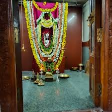
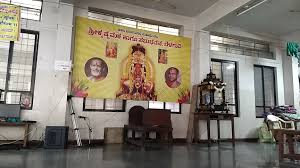
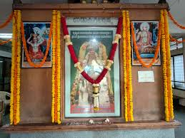

Welcome to the Sacred Abode
"Where Tradition Meets Devotion — Established by Sri Madhvacharya in 1285 AD"

Located in Ranade Colony, Hindwadi, Belagavi, Karnataka, Krishnamath Sabha Bhavan is a vibrant centre of devotion and spiritual service dedicated to Lord Sri Krishna — welcoming all devotees seeking divine blessings, peace, and a deeper connection with the Supreme.
Our ancient matha is world-renowned for its magnificent Dravidian architecture, the sacred Kanakana Kindi (the window through which Lord Krishna blessed Kanakadasa), soul-stirring bhajans, and the divine grace that envelops every devotee who enters.
Open every day
Mangala Aarti at 5:30 AM
Aug 16, 2026 — Grand Celebration
shonnidibba@gmail.com
Experience the divine grace through our various poojas and sevas performed with Vedic rituals and heartfelt devotion.
Start your day with the divine Mangala Aarti at 5:30 AM — a soul-stirring offering of light to Lord Krishna as He awakens.
Learn MoreThe sacred ceremonial bathing of the deity with milk, honey, and holy water — a deeply purifying ritual seeking divine blessings.
Learn MoreA powerful and auspicious puja recounting the divine glory of Lord Vishnu — bringing peace, prosperity, and fulfilment.
Learn MoreParticipate in the most sacred seva of adorning and serving the divine couple Radha Krishna with flowers, garlands, and prayers.
Learn MoreThe evening lamp-lighting ceremony is a mesmerising experience with devotional songs, ringing bells, and divine fragrance.
Learn MoreSacred fire rituals performed by learned Vedic priests for health, prosperity, and removal of obstacles from devotees' lives.
Learn MoreWitness the divine beauty of Krishnamath Sabha Bhavan through our collection of sacred moments and celebrations.


Join us in our vibrant celebrations, festivals, and spiritual gatherings throughout the year.
Celebrate the divine birth of Lord Krishna with grand poojas, bhajans, ras-leela performances and midnight aarti.
Celebrate the divine appearance day of Srimati Radharani with special poojas, flower offerings, and devotional songs.
Witness the grand Annakut — a mountain of food offerings to Lord Krishna followed by free Prasad distribution.
Verified experiences from devotees who have visited Krishnamath Sabha Bhavan, Belagavi. Rated 4.6 ★ on Google with 53 reviews.
"It is a true worship place — a Matha of Lord Sri Krishna. The moment you step inside, you feel a calm and divine energy. The priests perform the poojas with great devotion and the atmosphere is very peaceful."
"For small functions of 100 to 200 people, this place is very good. We held our family Satyanarayana Pooja here and everything was well managed. The hall is clean, the priests are knowledgeable, and the whole ceremony was conducted smoothly."
"Food is provided to the devotees undertaking sevas and religious activities here, which is a wonderful gesture. The prasad is simple, pure, and served with great warmth. Very grateful for the temple service to the community."